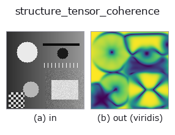

texture op• Data kinds: image → image
• Call: fullseye.apply(img, "structure_tensor_coherence", a=0.5, b=0.5) (the 2-D model is one image plus two scalar knobs a,b∈[0,1])

*The figure is the actual output on a synthetic 128×128 input. Left: input, right: output. Point clouds are drawn as a top-down scatter (brightness = z), 1-D series as a line plot, volumes as the maximum-intensity projection along z, videos as the middle frame, complex images as magnitude; return values that are not pictures are shown as the values themselves.*
*The output is shown in a viridis-like pseudo-colour (dark purple = low, yellow = high) so that a field of quantities — distance, phase, orientation, depth — can be read.*
Sweeping knob a (0.1 / 0.5 / 0.9, the other knob at its default):
▸ structure_tensor_coherence: knob a sweep (docs site)
Sweeping knob b (0.1 / 0.5 / 0.9, the other knob at its default):
▸ structure_tensor_coherence: knob b sweep (docs site)
On other images (synthetic scene / photo / coins. Top row: inputs, bottom row: their outputs. Knobs at default):
▸ structure_tensor_coherence: other inputs (docs site)
*The 4th column is a colour (H,W,3) input. This op handles colour without crossing channels (it does not convolve the colour channel as a third spatial axis).*
Returns the local degree of orientation alignment (anisotropy of the structure tensor) in [0,1].
Exactly (lambda1 - lambda2) / (lambda1 + lambda2). 1 is perfectly one-directional (ideal stripes), 0 is isotropic (flat surface, white noise, the crossing point of a cross). a/b are the same 2 scales as in structure_tensor_orientation.
Use it as a pair with structure_tensor_orientation: the orientation map has a value at every pixel, so places where orientation has no meaning are coloured too. Only with this op as a weight do you know "where the orientation can be trusted".
Conditions of use and known pitfalls: (1) If b (the integration window) is too small, the tensor's rank drops to 1 and it sticks at 1 everywhere — not aligned, but not measured. (2) Where 2 directions cross with equal strength (crossing points of woven fabric, grids) it drops to 0 — this is not "no structure" but "orientation cannot be pinned to 1", and it cannot be distinguished from a flat surface. To distinguish them, report local_std alongside.
Pixels whose trace is below 1e-6 of the whole-image maximum return 0 (flat surface). HALCON has no corresponding standalone op.
• gallery2d_texture_freq family guide
• Sample-data catalog (download URLs / licences) — 2-D uses skimage.data (BSD/public domain) plus synthetic images; 3-D lists download URLs for real data sources (Stanford, PDS, …).
• Operator provenance and references — the sources of the research/methods this op family came from.
• The canonical algorithm (author, year) and its uses are named in the family usage guide above.
The program below has been verified to run (same input as the figure). In Studio's help this block becomes buttons that load and run it on the spot.
structure_tensor_coherence 0.50 0.50
▸ Load this pipeline · Load & run
• gallery2d_texture_freq — py -3.11 examples/gallery2d_texture_freq.py
image as input)identity · gaussian · mean_box · bilateral · unsharp · median · min_filter · max_filter
texture)std_filter · local_bimodality · local_std · scale_select_std · bootstrap_std_error · structure_tensor_orientation · gabor · sk_frangi
*Provenance: ops.py — 2D operator registry. This per-op note is generated by tools/opdocs.py md (do not hand-edit).*
© 2026 Kazufumi Furuse — Fullseye operator documentation. Licensed under Apache-2.0.